How to use
Choose a feature below to find its usage guide. These guides cover the MuPDF backend for Okular. In Okular’s backend configuration, select MuPDF-NG; settings paths below refer to its General, PDF, and ePUB tabs.
Safety & Isolation
Documents are parsed and rendered in a separate worker process. In General → Security → Sandbox Enforcement, choose:
- Strict (default): open documents only when the worker reports a fully hardened sandbox.
- Relaxed: allow documents to open even when some sandbox protections are unavailable. Available protections still remain active.
Apply the setting and reopen a document if it was blocked by Strict enforcement. Enable Show notification when sandbox is degraded to display warnings about incomplete protection.
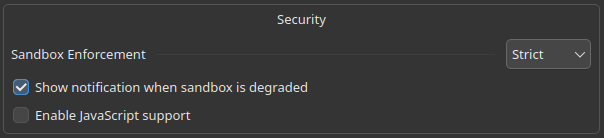
Blocked documents and warnings
When Strict enforcement blocks a document because the worker is not fully hardened, a guidance card appears instead of the document.
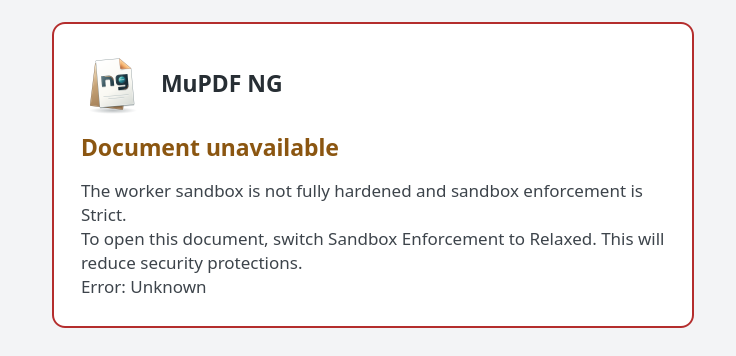
When degraded-sandbox notifications are enabled, Okular also reports incomplete protection in a warning banner. This example shows an unconfined worker; Relaxed enforcement allows documents to open in this state.
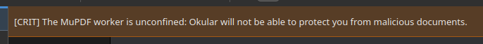
Probe the worker
Run the installed worker as your normal user to check the protections
available on your system. For a typical /usr/lib installation:
/usr/lib/okular-mupdf-ng/mupdfng-worker --sandbox-check
/usr/lib/okular-mupdf-ng/mupdfng-worker --sandbox-check=jsonExample output from an x86_64 Debian-style installation:
/usr/lib/x86_64-linux-gnu/okular-mupdf-ng/mupdfng-worker --sandbox-check
Sandbox check on host:
landlock: yes abi=9
seccomp: yes
linuxNamespace: yes
resourceLimits: yes
memoryProtection: yes
fullyHardened: yes
partiallyActive: noThe worker location depends on the package’s library directory;
it may use lib64 or a multiarch directory. For a source build,
use ./build/bin/mupdfng-worker --sandbox-check.
The probe activates the sandbox in a short-lived process and reports
Landlock, seccomp, namespaces, resource limits, memory protection, and any
reason for degraded protection. Exit code 0 means fully hardened,
1 means partially active, and 2 means unconfined.
Strict/Relaxed is the plugin’s enforcement policy; the probe reports whether runtime protections can satisfy Strict on this host. It does not change the policy or inspect an already running Okular worker.
OCR
Install a language model
Install a Tesseract language model for the document’s language.
The examples below install English (eng); use the search
command for your distribution to find other language models.
Ubuntu / Debian
sudo apt update
sudo apt install tesseract-ocr-engFind other models: apt search tesseract-ocr-.
Package references: Ubuntu,
Debian.
Fedora
sudo dnf install tesseract-langpack-engFind other models: dnf search tesseract-langpack.
Package reference.
openSUSE
sudo zypper install tesseract-ocr-traineddata-engFind other models: zypper search tesseract-ocr-traineddata.
Package reference.
Arch Linux / Manjaro
sudo pacman -S tesseract-data-engFind other models: pacman -Ss tesseract-data.
Arch package reference.
After installing a model, restart Okular and reopen the backend settings so it can discover the new language data. Model names use Tesseract language codes, which may differ from your desktop’s language code.
Configure OCR
In PDF → Optical Character Recognition, select the Tesseract Model and Tesseract Quality. Adjust the character-count threshold to control when automatic OCR runs.
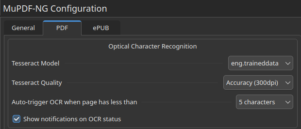
Enable OCR
Choose Tools → MuPDF OCR → Automatic for scanned pages, or On to run OCR even when a page already contains text. Choose Off to stop automatic recognition.
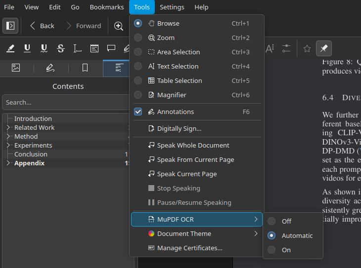
View the pages to recognize them, then select or search the recognized text. Recognition results are cached; OCR does not add a text layer to the saved PDF. You can also assign a keyboard shortcut to toggle OCR.
ePUB customisation
MOBI uses the ePUB rendering and layout engine, so the font, page size, and custom CSS settings below apply to both formats.
- Open the ePUB → Page Layout settings.
- Set Font Size, Font Family, and Page Size.
- Expand Custom CSS to add your own document styles.
- Apply the settings and restart Okular when prompted.
For example, this rule increases inherited line spacing:
body { line-height: 1.8; }A document’s own rules on individual elements can override inherited styles. Changing the layout can change page counts and text positions.
Document Theming
Choose Tools → Document Theme, below MuPDF OCR, or use General → Rendering → Document Theme in the backend settings. The choice is saved and shared across open PDF, ePUB, and MOBI documents.
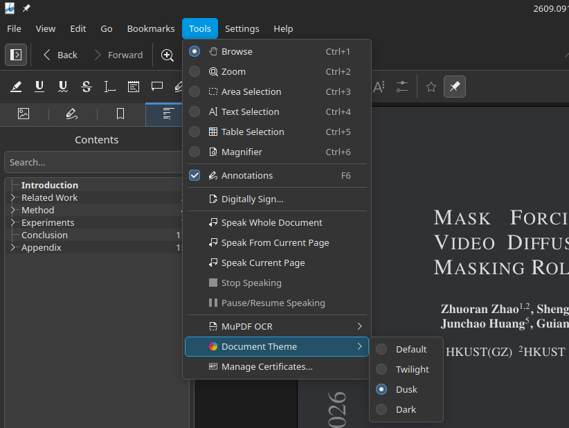
| Theme | Background | Appearance |
|---|---|---|
| Default | Original paper color | Original document colors |
| Twilight | Light grey (#D6D6D6) |
Dark text; reduces brightness across the page, including images |
| Dusk | Dark grey (#303134) |
Light text; images stay uninverted at 80% brightness |
| Dark | Nearly black (#202124) |
Light text; inverts lighter images and dims uninverted images to 80% brightness |
Dark leaves mostly dark pages’ vector colors unchanged and dims their images to 80% brightness. On other pages, it checks each raster image separately: mostly dark images stay uninverted at 80% brightness, while lighter images are inverted. Dusk also leaves mostly dark pages’ vector colors unchanged but still dims their images. Dusk distinguishes images from vectors, not their content: scanned text dims with its image, and vector illustrations follow the text palette.
For pages that need recoloring and use non-normal blend modes or knockout groups, Dark transforms the completed page to preserve correct compositing. Selective image inversion and 80% image dimming are unavailable on those pages. PDF highlights’ Multiply blending does not trigger this fallback, keeping highlighted text readable unless other blends require it.
Themes affect viewing only. OCR, printing, exports, and the document’s saved content retain their original colors. You can assign keyboard shortcuts to toggle themes.
Loading placeholders match Twilight, Dusk, and Dark when Okular’s per-page placeholder color API is available. On older versions, Dusk and Dark temporarily use accessibility Change Paper Color. These settings are not saved, and user preferences are restored when no document needs the workaround. Twilight placeholders may remain white on older versions.
See the feature maturity matrix for testing coverage and limitations.
Keyboard shortcuts
- Open a document with the MuPDF backend, then choose Settings → Configure Shortcuts….
- Expand okular_mupdfng or search for the action name.
- Select an action, assign a shortcut, and apply the change.
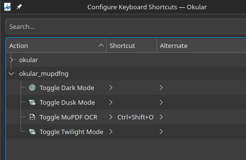
These actions have no default shortcuts. Toggle MuPDF OCR switches between On and the previous OCR mode. Toggle Twilight Mode, Toggle Dusk Mode, and Toggle Dark Mode switch between the selected theme and Default.
PDF Heuristic Outline
- In General → Behavior, enable Generate a table of contents when none is embedded.
- Open a PDF without an embedded outline and show Okular’s Contents sidebar.
- Select a generated entry to jump to its page.
The generated TOC uses document headings and layout cues. It is a navigation aid and may miss or misclassify headings. An embedded outline takes precedence, and generated results are cached without modifying the PDF.
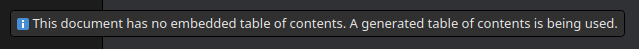
Annotations & Forms
Annotations
- Open a PDF, then use Okular’s annotation tools to select a text, highlight, line, shape, ink, stamp, or caret tool.
- Add the annotation to the page and adjust its properties as needed.
- Save the PDF, or use Save As to keep a separate copy.
Use undo and redo to revise edits. To share PDF annotations separately, use XFDF export; to bake them into page content, use flattened PDF export.
PDF Forms
- Open the PDF and choose View → Show Forms, or use the Show Forms button when Okular offers it.
- Edit text fields, checkboxes, radio buttons, or choice fields.
- Save the PDF or use Save As to keep a copy with your edits.
For date and time fields, hover over the form field to check its tooltip
for the expected input format, such as yyyy/mm/dd for a date,
when format guidance is available.
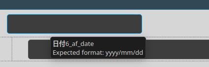
AcroForm controls are supported; XFA forms are detected but not implemented. Some calculations and buttons need the optional PDF JavaScript setting.
PDF Export
For PDF documents, use File → Export As to create a flattened PDF or an XFDF annotation file. PDF, ePUB, and MOBI documents can also export plain text; ePUB and MOBI can export to PDF.
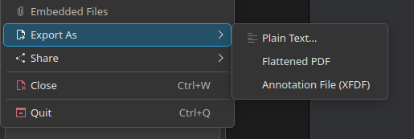
Flattened PDF
Choose File → Export As → Flattened PDF and save a new output file. Annotations and form fields are baked into page content, so they no longer remain editable controls in that copy. Keep the original PDF if you need to edit them later. The export leaves the open source document unchanged and ignores document themes.
XFDF annotation file
Choose File → Export As → Annotation File (XFDF), then
save the output and share it with the corresponding PDF. The file picker may
use an .xml extension; its contents are XFDF. This keeps
annotations separate from the PDF. XFDF export does not support PDFs
containing rotated pages.
Document themes affect viewing only, so printing and exports use the document’s original colors.
ePUB/MOBI export
- Open the ePUB or MOBI document and configure its page layout.
- Choose File → Export As → PDF and an output filename.
- Wait for the export-complete notification, then open the resulting PDF.
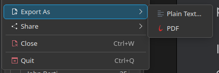
The export uses the current reflow layout. Document themes do not change its colors. The resulting PDF has fixed pages rather than reflowable text.
Signatures
Open a signed PDF and use Okular’s Signatures panel to inspect the signature and certificate details. Certificate trust and signature validity are separate checks.
To sign a PDF, configure an NSS certificate database in PDF → Crypto Engine, then use Okular’s signing action. Select a certificate with its private key, place the signature, and save the signed output.
Adjust the signature appearance in the PDF settings.
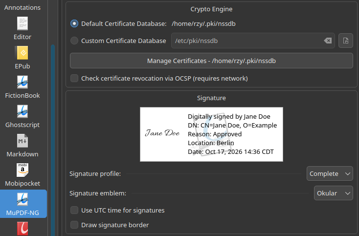
If no signing certificate is available, use the certificate manager to import one or create a self-signed certificate.
Cert Manager
In PDF → Crypto Engine, choose the default certificate database or a custom NSS database directory, and apply the setting.
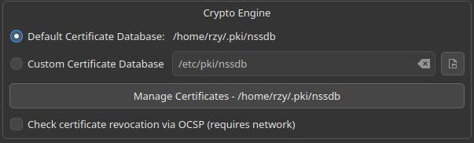
- Open Tools → Manage Certificates…, or the Manage Certificates button in the PDF settings.
- Use My Certificates for signing identities and People for certificates trusted for verification.
- Use Add Certificate to import a file, paste a PEM certificate, or create a self-signed certificate where available.
A signing identity needs its private key; a public certificate alone cannot sign. Self-signed certificates need separately configured trust before other readers will treat them as trusted.
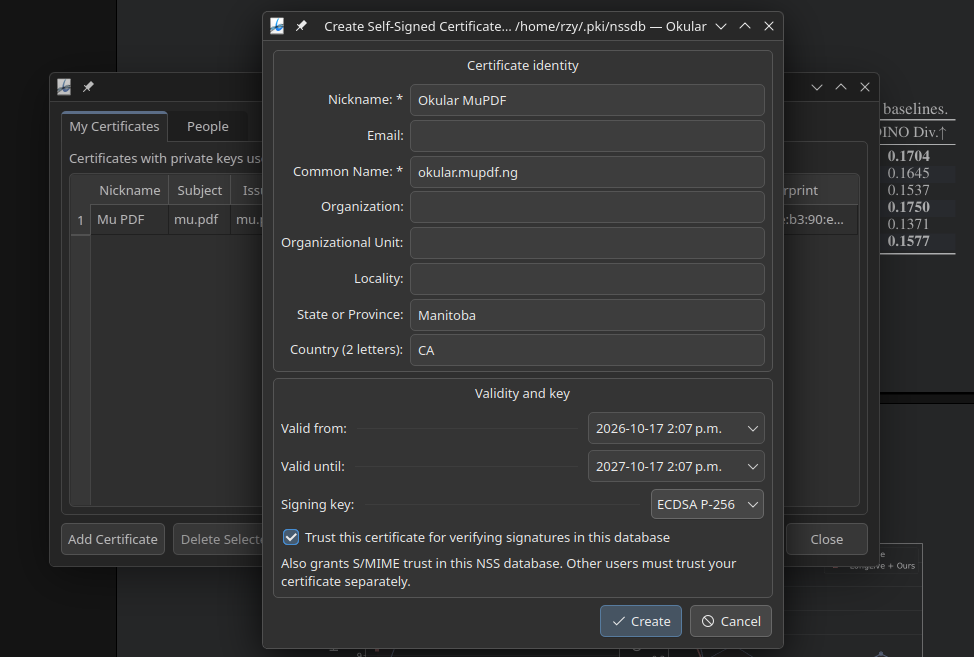
PDF JavaScript
In General → Security, enable Enable JavaScript support, apply the setting, and reopen the PDF. The same reopen step applies when disabling it.
This optional, experimental feature supports MuPDF’s form calculations and field/button actions; it does not implement every Acrobat JavaScript API. The setting is unavailable when JavaScript support was disabled at build time.
Caching
OCR results, generated PDF TOCs, and ePUB/MOBI layout accelerators are cached automatically. Reopening a document can reuse compatible results; changing relevant OCR or layout settings uses the corresponding cache.
In General → Cache Management, click Click to calculate cache storage size to measure usage. Open the button’s menu and choose Vacuum PDF TOCs, Vacuum ePUB Accels, Vacuum OCR, or Vacuum All to clean cached data.
The retention note shows when old cache files are removed automatically. Cache cleanup does not delete source documents or saved edits.